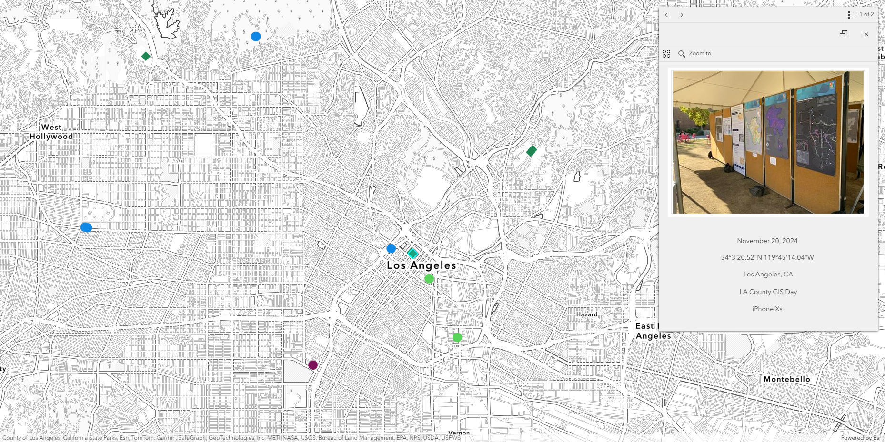
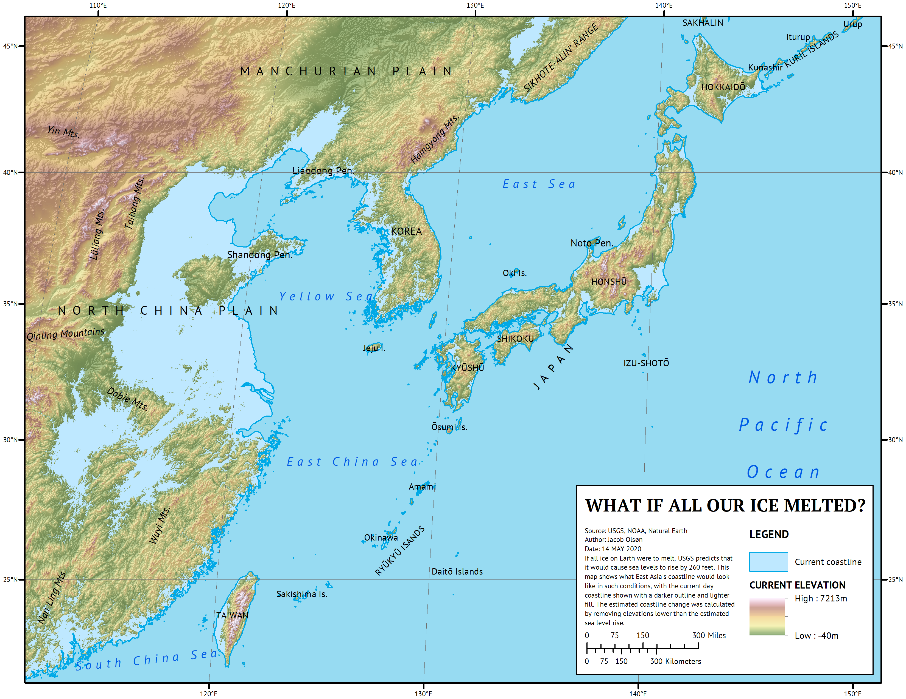

Portfolio
Experience Builder: Travel Map
Simple Experience Builder app where I upload pictures from my trips with the locations shown on a map. I started by using the Geotagged Photos to Points tool in ArcGIS Pro to create a point feature class from photos taken on my iPhone over the years and uploading the feature class to ArcGIS Online. I add new photos by using the Field Maps mobile app. The popups include an Arcade expression to convert coordinates to DMS format. The app can be viewed by clicking "Travel Map" in the menu above.
Simple Experience Builder app where I upload pictures from my trips with the locations shown on a map. I started by using the Geotagged Photos to Points tool in ArcGIS Pro to create a point feature class from photos taken on my iPhone over the years and uploading the feature class to ArcGIS Online. I add new photos by using the Field Maps mobile app. The popups include an Arcade expression to convert coordinates to DMS format. The app can be viewed by clicking "Travel Map" in the menu above.

ArcMap: Sea Level Rise in East Asia
For my final project in GEOG 482, I made a map showing projected changes in coastlines in East Asia in the event of all ice on Earth melting. I made this map in ArcMap and created a polygon of all areas below USGS's estimated sea level rise of 260 feet using a DEM of East Asia. DEM was from USGS and label data was from Natural Earth.
For my final project in GEOG 482, I made a map showing projected changes in coastlines in East Asia in the event of all ice on Earth melting. I made this map in ArcMap and created a polygon of all areas below USGS's estimated sea level rise of 260 feet using a DEM of East Asia. DEM was from USGS and label data was from Natural Earth.

Python: Convert PLS-CADD LiDAR Points to Contour Lines
This is the source code for an ArcGIS Pro script tool which takes a LiDAR shapefile exported from PLS-CADD and creates contour lines with it. I created this script tool to speed up a task that I previously had to do manually while working at a previous company.
This is the source code for an ArcGIS Pro script tool which takes a LiDAR shapefile exported from PLS-CADD and creates contour lines with it. I created this script tool to speed up a task that I previously had to do manually while working at a previous company.
import arcpy
import os
def lidar_process(in_lidar, final_out):
# Place lidar points in correct geographic coordinates with XY table to point
xy_result = r"C:\GitHub\arcpy-scripts\LidarToTopo\temp_data.gdb\xy_result"
arcpy.management.XYTableToPoint(in_table=in_lidar, out_feature_class=xy_result, x_field="longitude", y_field="latitude")
# Project lidar points to correct state plane projection
proj_result = r"C:\GitHub\arcpy-scripts\LidarToTopo\temp_data.gdb\proj_result"
sr = sp_project(in_points=xy_result, out_proj=proj_result)
arcpy.management.Delete(xy_result)
# Create a TIN with projected lidar
tin_result = r"C:\GitHub\arcpy-scripts\LidarToTopo\temp_data\tin_result"
arcpy.ddd.CreateTin(out_tin=tin_result, spatial_reference=sr, in_features=f"{proj_result} Z")
arcpy.management.Delete(proj_result)
# Get point spacing to delineate TIN and remove outside areas
max_edge = get_ps(in_lidar) * 4
arcpy.ddd.DelineateTinDataArea(in_tin=tin_result, max_edge_length=max_edge)
# Create raster from TIN
ras_result = r"C:\GitHub\arcpy-scripts\LidarToTopo\temp_data.gdb\ras_result"
arcpy.ddd.TinRaster(in_tin=tin_result, out_raster=ras_result, sample_distance="CELLSIZE", sample_value=1)
arcpy.management.Delete(tin_result)
# Create contour lines from raster
con_result = r"C:\GitHub\arcpy-scripts\LidarToTopo\temp_data.gdb\con_result"
arcpy.sa.Contour(in_raster=ras_result, out_polyline_features=con_result, contour_interval=10)
arcpy.management.Delete(ras_result)
# Smooth final contour lines
arcpy.cartography.SmoothLine(in_features=con_result, out_feature_class=final_out, algorithm="PAEK", tolerance=10)
arcpy.management.Delete(con_result)
return
def sp_project(in_points, out_proj):
state_plane = r"C:\GitHub\arcpy-scripts\LidarToTopo\temp_data.gdb\CA_State_Plane_Zones"
# Perform summarize within tool to find number of lidar points in each state plane
sum_within = r"C:\GitHub\arcpy-scripts\LidarToTopo\temp_data.gdb\sum_within"
arcpy.analysis.SummarizeWithin(in_polygons=state_plane, in_sum_features=in_points, out_feature_class=sum_within)
# Get state plane zone with highest number of lidar points
fields = ['ZONE', 'Point_Count']
allvalues = [row for row in arcpy.da.SearchCursor(sum_within, fields)]
proj_zone = max(allvalues, key=lambda x: x[1])[0]
arcpy.management.Delete(sum_within)
# Dictionary for returning full state plane projection name
coor_sys = {
"CA_1": "NAD 1983 StatePlane California I FIPS 0401 (US Feet)",
"CA_2": "NAD 1983 StatePlane California II FIPS 0402 (US Feet)",
"CA_3": "NAD 1983 StatePlane California III FIPS 0403 (US Feet)",
"CA_4": "NAD 1983 StatePlane California IV FIPS 0404 (US Feet)",
"CA_5": "NAD 1983 StatePlane California V FIPS 0405 (US Feet)",
"CA_6": "NAD 1983 StatePlane California VI FIPS 0406 (US Feet)"
}
# Project lidar points to state plane zone with most points within it
out_coor_sys = arcpy.SpatialReference(coor_sys[proj_zone])
arcpy.management.Project(in_dataset=in_points, out_dataset=out_proj, out_coor_system=out_coor_sys)
return out_coor_sys
def get_ps(lidar_points):
# Run LAStools shp2las in OS system
las_result = r"C:\GitHub\arcpy-scripts\LidarToTopo\temp_data\las_result.las"
las_com = fr"C:\GitHub\arcpy-scripts\LidarToTopo\LAStools\bin\shp2las.exe -i {lidar_points} -o {las_result}"
os.system(las_com)
# Run LAS dataset statistics to return point spacing
arcpy.management.LasDatasetStatistics(las_result)
ps = arcpy.Describe(las_result).pointSpacing
arcpy.management.Delete(las_result)
return ps
if __name__ == "__main__":
in_lidar = arcpy.GetParameterAsText(0)
final_out = arcpy.GetParameterAsText(1)
lidar_process(in_lidar, final_out)
Leaflet Map Example
A simple interactive web map created using Leaflet.js.
A simple interactive web map created using Leaflet.js.

<div id="map"></div>
<script>
var map = L.map('map').setView([51.505, -0.09], 13);
L.tileLayer('https://{s}.tile.openstreetmap.org/{z}/{x}/{y}.png').addTo(map);
</script>
HTML Table from GeoJSON
Render a simple HTML table from GeoJSON features.
Render a simple HTML table from GeoJSON features.
<script>
const data = {
"type": "FeatureCollection",
"features": [
{ "properties": { "name": "Park", "type": "Recreation" }},
{ "properties": { "name": "Library", "type": "Education" }}
]
};
let table = "<table><tr><th>Name</th><th>Type</th></tr>";
data.features.forEach(f => {
table += `<tr><td>${f.properties.name}</td><td>${f.properties.type}</td></tr>`;
});
table += "</table>";
document.getElementById("output").innerHTML = table;
</script>